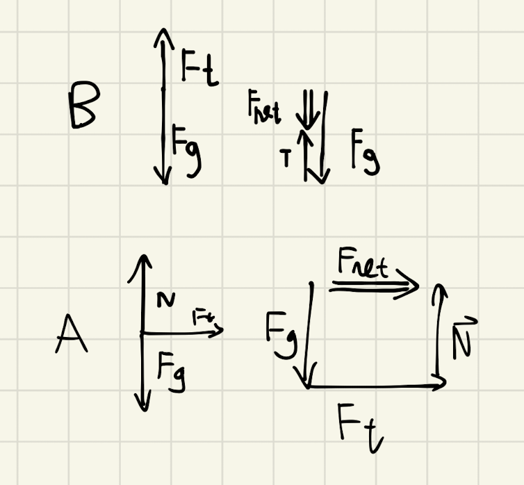
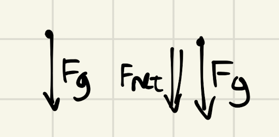

Backlinks
1 Deriving Velocity in Polar Coordinates
In this problem, we aim to determine functions \(f_1\), \(f_2\), that represents the velocity and acceleration vectors respectively of a circularly movable reference frame.
1.1 Defining First Principles
We begin by defining \(\vec{r}\), the vector representing the radius of the rotating frame, as follows:
\begin{equation} \vec{r} = r \cos(\theta) \hat{i} + r \sin{\theta} \hat{j} \end{equation}We define \(\theta\) as the angle up from the horizontal at which \(\vec{r}\) is located, and therefore the vector \(\vec{r}\) is simply the magnitude thereof \(r\) projected upon that angle \((\cos\theta, \sin\theta)\) into a vector.
Furthermore, we define a unit vector in the direction of \(\vec{r}\) as \(\hat{r}\). That is:
\begin{equation} \hat{r} = \cos(\theta) \hat{i} + \sin{\theta} \hat{j} \end{equation}Lastly, we define a vector \(\hat{\theta}\), a unit vector orthogonal to \(\vec{r}\). It is defined as such as the direction of \(\vec{\theta}\) would, at any given instance, be perpendicular to the direction of \(\vec{r}\) and parallel to the direction to its movement.
\begin{equation} \hat{\theta} = -\sin{\theta}\hat{i} + \cos{\theta}\hat{j} \end{equation}1.2 Determining changes in direction
We now create definitions for changes in "direction" — the changes present in \(\hat{r}\) and \(\hat{\theta}\) — which we will leverage later.
\begin{align} \frac{d\hat{r}}{dt} &= \frac{d}{dt}(\cos{\theta}\hat{i} + \sin{\theta}\hat{j}) \\ &= -\dot{\theta} \sin{\theta}\hat{i} + \dot{\theta}\cos{\theta}\hat{j} \\ &= \dot{\theta} (-\sin{\theta}\hat{i} + \cos{\theta}\hat{j}) \\ &= \dot{\theta}\hat{\theta} \end{align}Hence, the change in the direction of \(\hat{r}\), aptly and intuitively, could be modeled by the change in the angle \(\theta\) times the direction of \(\theta\).
\begin{align} \frac{d\hat{\theta}}{dt} &= \frac{d}{dt}(-\sin\theta \hat{i} + \cos\theta \hat{j}) \\ &= -\dot{\theta}\cos{\theta} \hat{i} - \dot{\theta}\sin\theta\hat{j} \\ &= -\dot{\theta} (\cos\theta\hat{i} + \sin\theta\hat{j}) \\ &= -\dot{\theta}\hat{r} \end{align}We now note that, indeed, the change in the direction of \(\theta\) is modeled by the direction at which \(\vec{r}\) exists, and the angle of \(\theta\) as \(\theta\) must be orthogonal to \(\vec{r}\).
1.3 Solving for \(f_1 = \vec{v}\)
We now begin to solve for a function \(f_1(\hat{r},\hat{\theta},\dot{r},\dot{\theta},r) = \vec{v}\). We know that the velocity of the frame as a whole could be modeled by the following expression:
\begin{align} \vec{v} &= r \frac{d\hat{r}}{dt} + \hat{r} \frac{dr}{dt} \\ &= r \dot{\theta}\hat{\theta} + \hat{r}\dot{r} \end{align}The derivation of this expression simply follows variable substitution to result in the expression modeling velocity: that the velocity of the point is determined by the radius-scaled velocity in the angle of the object (the velocity that's tangent to the radius), plus the velocity of the radius itself (how fast it grows, the radial velocity.)
1.4 Solving for \(f_2 = \vec{a}\).
We here wish to determine a function \(f_2(\hat{r},\hat{\theta},\dot{r},\dot{\theta},\ddot{r},\ddot{\theta},r) = \vec{a} = \frac{d}{dt}\vec{v}\)
Deriving the value of this expression, therefore, simply acts as a matter of taking the derivative of the top-derived expression and performing variable substitution for \(\dot{\hat{r}}\) and \(\dot{\hat{\theta}}\) as determined above as needed.
\begin{align} \vec{a} &= \frac{d}{dt} (r\dot{\theta}\hat{\theta} + \hat{r}\dot{r}) \\ &= ((\frac{d}{dt}r) \dot{\theta}\hat{\theta} + ((\frac{d}{dt} \dot{\theta})\hat{\theta} + (\frac{d}{dt} \hat{\theta})\dot{\theta})r) + ((\frac{d}{dt}\hat{r})\dot{r} + (\frac{d}{dt}\dot{r})\hat{r}) \\ =& ((\dot{r})\dot{\theta}\hat{\theta} + ((\ddot{\theta})\hat{\theta} + (-\dot{\theta}\hat{i})\dot{\theta})r) + ((\dot{\theta}\hat{\theta})\dot{r} + (\ddot{r})\hat{r}) \\ =& (\dot{r}\dot{\theta}\hat{\theta} + \ddot{\theta}\hat{\theta}r - \dot{\theta}^2 \hat{r}r) + (\dot{\theta}\hat{\theta}\dot{r} + \ddot{r} \hat{r}) \\ =& \hat{\theta}(2\dot{r}\dot{\theta} + \ddot{\theta}r) + \hat{r} (\ddot{r} - \dot{\theta}^2r) \end{align}We could now figure that acceleration is actually four terms, scaled by their respective directions (\(\hat{\theta}\) and \(\hat{r}\)). That is:
- \(2\dot{r}\dot{\theta}\) is a term representing the coriolis force: a fictitious force pushing objects as either of radius change or spin speed changes.
- \(\ddot{\theta}r\) is a term that models the tangential acceleration: how quickly does the object accelerates at a direction tangent to the spin. The "tangential acceleration." We could see this if \(\ddot{r} = \dot{\theta} = 0\).
- \(\ddot{r}\) is a term that models the acceleration of the radius, as it evidently shows. The "radial acceleration". We could see this if \(\dot{\theta} = \ddot{\theta} = 0\).
- \(\dot{\theta}^2 r\) is a term that models the inward acceleration that maintains the shape of the circle. It is \(\dot{\theta}^2 r = \omega^2 r = r \frac{v^2}{r^2} = \frac{v^2}{r}\), the "centripetal acceleration." We could see this if \(\dot{r} = \ddot{r} = \ddot{\theta} = 0\)
For a point to stay on the circle, you have to have components of acceleration INTO the circle as well to prevent the side spin from making it fly off. Hence, "tangential acceleration" + "centripetal acceleration."
2 Mass in a Cone
For this problem, we deduct the fact, given the uniform velocity \(v_0\) and the uniform path in which the particle exists, that the object is indeed in uniform circular motion. As such, there is
only one main source of acceleration — that of centripetal acceleration. Furthermore, it is only influenced by forces normal and gravitational. This situation could therefore be modeled in the manner shown below:

Via this diagram, we could therefore determine that the net force inwards is \(F_{net} = ma = \frac{F_g}{\tan{\theta}} = \frac{m g}{\tan{\theta}}\).
Therefore, we could determine that the value of acceleration inwards is
\begin{align} &ma = \frac{mg}{\tan{\theta}} \\ \Rightarrow &\,a = \frac{g}{\tan{\theta}} \end{align}As this problem deals exclusively with uniform circular motion, we additionally set \(a = \frac{{v_0}^2}{r}\).
Therefore, to solve for \(r\), we simply equate the two expression by \(a\) and solve.
\begin{align} &\frac{g}{\tan{\theta}} = \frac{{v_0}^2}{r} \\ \Rightarrow &\, r = \frac{{v_0}^2 \tan{\theta}}{g} \end{align}3 Whirling Block

We first write a statement for the net force of block \(B\):
\begin{align} F_{{net}_b} &= T - F_g_b \\ m_B a_B &= T - m_B g \end{align}To figure the tension on the block, we leverage the expression for the net force upon block \(A\):
\begin{align} F_{{net}_a} = T \hat{r} \end{align}As the mass of \(A\) is rotating in a circle, we know that its acceleration (in the radial component, as the acceleration in the tangential component is 0), must be \(\ddot{r} - \omega^2R\). Therefore, we could claim that:
\begin{equation} T\hat{r} = m_A(\ddot{r} - \omega^2R ) \end{equation}We further know that, due to the uncompressability and masslessness of the string, the radial acceleration is simply how much the block \(B\) is accelerating: that \(\ddot{r} = a_B\).
Therefore:
\begin{equation} T = -m_A(a_B - \omega^2R) \end{equation}Substituting \(T\) into the expression for \(F_{{net}_b}\) derived above…
\begin{align} m_Ba_B &= -m_A(a_B - \omega^2R) - m_Bg \\ m_Ba_B &= -m_Aa_B + m_A\omega^2R - m_Bg \\ m_Ba_B + m_Aa_B &= m_A\omega^2R - m_Bg \\ (m_B-m_A)a_B &= m_A\omega^2R - m_Bg \\ a_B &= \frac{m_A\omega^2R - m_Bg}{m_B+m_A} \end{align}4 Loop The Loop
Analysing the situation of the problem, we could first make a simplifying deduction: that the loop-de-loop's completion without loss of contact can be simplified to the successful counteraction of the force of gravity at the top of the loop-de-loop. This is due to the fact that, at any other angle at which the object could be at, a ($x$-direction) component of the acceleration of gravity would be in the direction along the track: which would not cause lost of contact. It is only at the top of the loop that all of the acceleration of gravity is applied directly towards the direction that would cause the object to loose contact.
Hence, as long as the velocity at entry is high enough such that the whole of gravitation force is counteracted, the object will stay on the track. This is also equivalent so saying that we wish to solve for where our normal force to be exactly 0 (point where "contact" is lost, that, based on the expression for uniform circular motion, \(mg+N = ma = \frac{mv^2}{R}, N=0\).
Therefore:

We therefore proceed to solve for \(v^2\) (as, for the second part of this problem, \(v^2\) would be more easily treated) based on this expression.
\begin{align} &mg = \frac{mv^2}{R} \\ \Rightarrow &\,g = \frac{v^2}{R} \\ \Rightarrow &\,v^2 = gR \end{align}Finally, to figure the height at which the needed \(v^2\) could be achieved, we leverage energetic expressions.
In this problem, we wish for the velocity at the top of the loop to be \(v^2\) as deducted above. Setting the zero-point to 0, our \(\Delta h\) to reach the top of the loop-de-loop is \(h_0 - 2R\) (subtracting out the diametre of the circle on the bottom.) We deduct, therefore, that the potential energy needed at the top of the ramp is \(mg(h_0-2R)\).
We wish to convert all of the potential energy to kinetic energy at the bottom of the loop. We assume that, given the object is a "block", there are no rotational kinetic energy. That:
\begin{align} mg(h_0 - 2R) = \frac{1}{2} mv^2 \end{align}Performing variable substitution upon the derived value needed of \(v^2\) and solving for \(h_0\):
\begin{align} &mg(h_0 - 2R) = \frac{1}{2} mv^2\\ \Rightarrow &\, mg(h_0 - 2R) = \frac{1}{2} mgR\\ \Rightarrow &\, (h_0 - 2R) = \frac{1}{2} R\\ \Rightarrow &\, h_0 = \frac{1}{2} R + 2R\\ \Rightarrow &\, h_0 = \frac{5}{2} R \end{align}5 Tropical Storm
As the wind closer to the equator, it would veer further off to the Westernly direction (the "left") under the earth's rotation from west-to-east ("counterclockwise"). As the earth is rotating, the wind's inertia prevents it from rotating as fast as with the Earth, and hence it would "lag" behind the rotation of the earth from the reference frame of the universe. As the earth is rotating away from the west, the winds closer to the equator would "lag" further behind in the Westernly direction. In the reference frame of the Earth, this results in a phantom coriolis force towards the Westernly direction that increases in magnitude as the wind blows closer to the equator.
The same is true in the opposite direction. As the wind blows farther away from the equator, by the same logic, it would — in the reference point of Earth — experience a force that seems to push it in the Easternly direction because its source location (closer to the equator) is traveling faster than its destination location (farter from equator). Hence, it would appear to be "ahead" of the earth and hence show a force in the Easternly direction.
Given these principles, a northern-hemisphere hurricane originating from the north would first be blown West as it travels south, then blown East as it spins around and travel North again: resulting in counter-clockwise motion.
Similarly, a southern-hemisphere hurricane originating from the south would be blown first East as it travels North, then blown West as it spins around and travel South again: resulting in clockwise motion.
6 Mission Impossible
6.1 Which side of the Banister should Hunt stand on?
The coriolis acceleration is applied towards the \(\hat{\theta}\) direction (\(\hat{\theta}2\dot{r}\dot{\theta}\)). As such, to ensure that, once accelerated, Hunt would be leaned against the banister instead of pushed away from it, he should stand on \(-\theta\) side of the banister such that, when he is accelerated in towards \(\hat{\theta}\), he collides into the banister and hence keep his stance.
6.2 Gripping the banister?
We first deduct \(\omega\), the pace at which the platform is rotating. We are given that the platform rotates at 1 revolution per minute — completing \(2\pi\) of rotation in every minute.
Hence, in radians per second, we derive that the angular velocity at which the platform is rotating is \(\omega = \frac{2\pi}{60} = \frac{\pi}{30}\).
The maximum force which Hunt may apply to the banister is \(2.0N\), meaning he must accelerate, at maximum \(\frac{2.0N}{80kg} = 0.025 \frac{m}{s^2}\) tangent to the banister. Furthermore, we determine that he has a constant radial speed (meaning, no radial acceleration.)
As such, we could determine that the force Hunt would apply to the banister (orthogonal to the radius, in \(\hat{\theta}\) direction), is as follows:
\begin{equation} a_{tangent} = 2\dot{r}\dot{\theta} = 2\dot{r}\omega \end{equation}We therefore perform variable substitution upon \(\omega\) and \(a_{tangent}\) as discussed above to figure the optimal \(\dot{r}\) that would exert exactly the maximum allowable force.
\begin{align} &a_{tangent} = 2\dot{r}\omega \\ \Rightarrow & \dot{r} = \frac{a_{tangent}}{2 \omega} \\ \Rightarrow & \dot{r} = \frac{0.025 \times 30}{2 \times \pi} \approx 0.119 \frac{m}{s} \end{align}Sliding at this rate, we determine that Hunt would maximally be able to traverse the 10 metre rotating disk at \(10/0.119 \approx 84\) seconds.